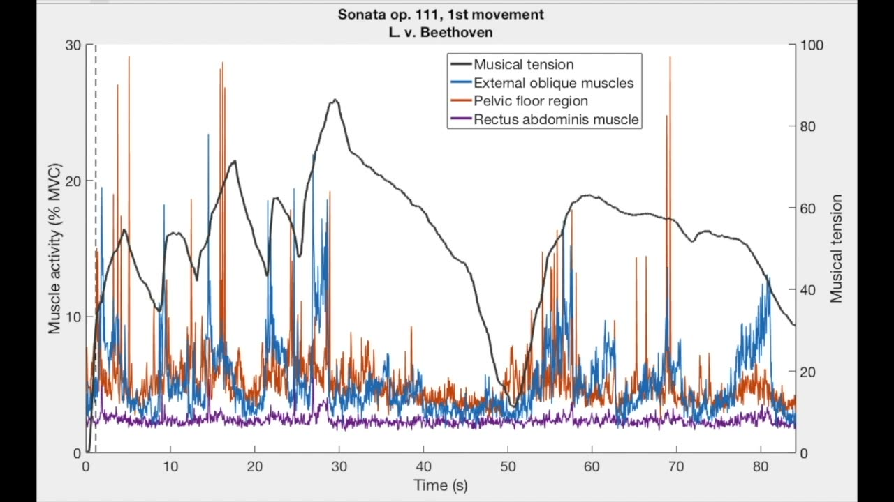
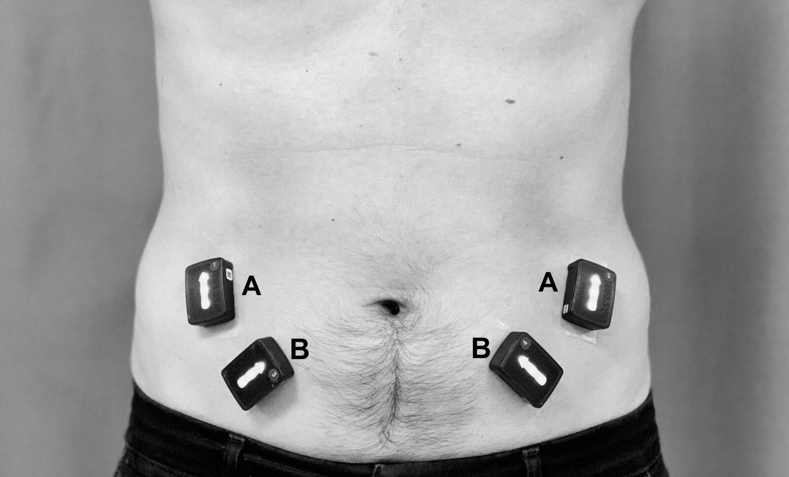
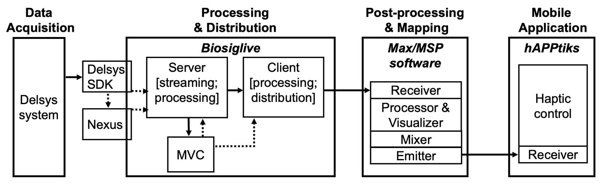
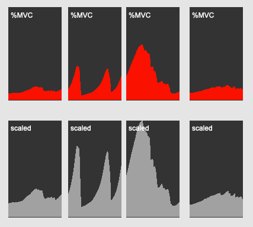
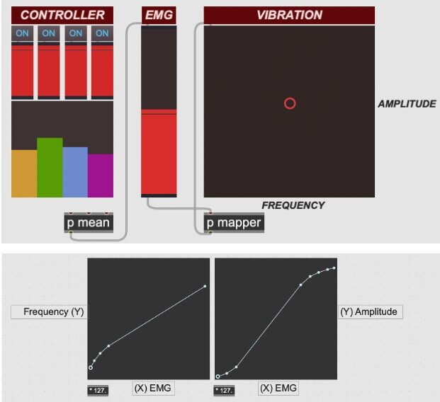
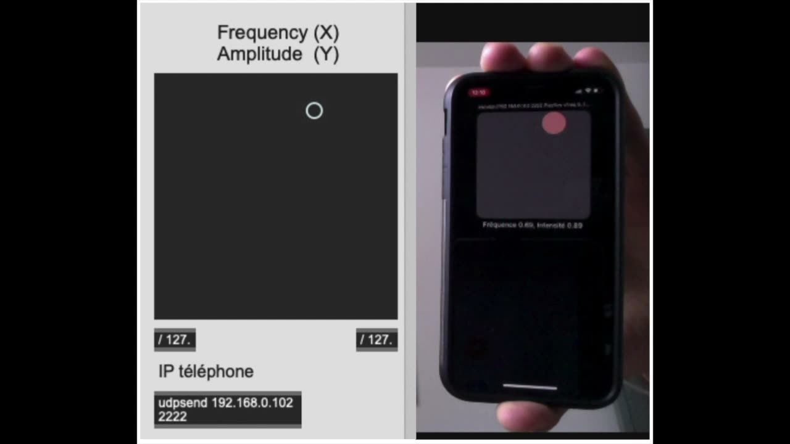

Feeling the Effort of Classical Musicians - A Pipeline from Electromyography to Smartphone Vibration for Live Music Performance
Abstract
This paper presents the MappEMG pipeline. The goal of this pipeline is to augment the traditional classical concert experience by giving listeners access, through the sense of touch, to an intimate and non-visible dimension of the musicians’ bodily experience while performing. The live-stream pipeline produces vibrations based on muscle activity captured through surface electromyography (EMG). Therefore, MappEMG allows the audience to experience the performer’s muscle effort, an essential component of music performance which is typically unavailable to direct visual observation. The paper is divided in four sections. First, we overview related works on EMG, music performance, and vibrotactile feedback. We then present conceptual and methodological issues of capturing musicians’ muscle effort related to their expressive intentions. We further explain the different components of the live-stream data pipeline: a python software named Biosiglive for data acquisition and processing, a Max/MSP patch for data post-processing and mapping, and a mobile application named hAPPtiks for real-time control of smartphones’ vibration. Finally, we address the application of the pipeline in an actual music performance. Thanks to their modular structure, the tools presented could be used in different creative and biomedical contexts involving gestural control of haptic stimuli.
Author Keywords
Music performance, muscle activity, haptics, electromyography, gestures, expression, musical tension, mobile application
CCS Concepts
•Applied computing → Sound and music computing; Performing arts; •Applied computing → Life and medical sciences; Bioinformatics;
Introduction
Classical music performance involves the production of highly skilled and complex multi-joint body movements. These movements are usually referred as gestures in music research as this notion allows a better coupling of physical and mental processes underlying music performance [1]. In a traditional classical music performance set-up, listeners’ perception is mainly modulated by both auditory and visual stimuli as gestures can influence perception of musicians’ expressive intentions (see e.g. [2][3][4]). Gestures are however not only composed of kinematic, and therefore visible, features. Causes of movement, such as muscle activity, are important non-visible gestural features. Muscle activity is the main feature responsible for body motion. In addition, it can modulate gestures’ expressivity [5] and occur in the absence of movement (e.g. isometric contractions). Though essential for performance, musicians’ muscle activity can hardly be perceived by listeners, who are unable to experience such essential activity of musicians. This paper presents the MappEMG pipeline. The goal of this pipeline is to apply vibrations to the audience based on musicians’ muscle activity related to their expressive intentions while performing. The experience of the classical concert is augmented by real-time haptification [6] of expression-related muscle activity data captured through surface electromyography (EMG). Therefore, our work gives access through the sense of touch to an intimate and non-visible dimension of the musicians’ bodily experience while performing.
According to the embodied cognition paradigm [7], musicians’ gestures can encode the expressive affordances of the musical discourse [8]. Empirical work on the embodiment of expressive intentions by musicians’ gestures has mainly focused on kinematic features. Studies on classical instruments such as piano [9][10], clarinet [11], and cello [12] have shown relations between performers’ upper-body movements and different features related to music expression, such as musical tension, phrase structure, and timing. Musical tension (i.e. constant tension-relaxation flux of the musical discourse) is usually recognized as a key parameter of the expressive content of Western tonal music [13], which represents the majority of the classical repertoire. From a bodily perspective, musical tension is closer to the notions of ‘weight effort’, ‘gesture intensity’ or ‘power’ used to analyze gesture expressivity (e.g. in Laban Movement Analysis [14]) rather than to specific geometrical and temporal movement descriptions. Since these notions refer to the qualitative dimension of gestures associated with the performer’s inner intent and the amount of tension of the movement, they can be better captured by muscle activity sensors [5].
By mapping classical musicians’ muscle activations to haptic stimuli, we aim to displace at the listener level the performer’s physiological effort related to the embodiment of expressive intentions in terms of musical tension. A displaced embodiment is therefore operated, as the listener becomes able to touch the performer’s inner physiological state linked to structural musical features. In a previous offline version of the MappEMG data pipeline [15], we produced haptic stimuli using the Vibropixels [16]. Accessibility of sufficient devices to match audience sizes was however one of the main limitations of our previous work. To overcome this limitation, we introduced the design of a mobile application to produce vibrotactile stimuli using listeners’ smartphones.
This paper presents the main features of the live-stream MappEMG pipeline, from data collection procedures to the mobile application. The first section proposes a short overview of related works on EMG, music performance, and vibrotactile feedback. The second section presents conceptual and methodological issues related to the capture of musicians’ embodiment of musical tension. The third section exposes the different components of the modular live-stream data pipeline. Finally, the fourth section addresses the application of the pipeline in an actual music performance.
Background
Electromyography in music performance
Since the early 1990s, EMG-driven control interfaces (e.g. BioMuse, BodySynth) have been used to translate muscle activity to sound, transforming the performer’s body itself into a musical instrument [17]. In the 2000s, mapping of EMG signals to sound synthesis became an increasingly adopted practice by artists and specialists working on new interfaces for gestural control. For instance, the notion of biophysical music emerged to group the rapidly emerging performance and composition practices based on sonification of muscle biosignals [18].
EMG sensors allow the acquisition of input gestural data (electrical activity of muscle motor units triggered by neural commands) which might or might not result in body motion. Therefore, EMG sensors capture information that is closer to performers’ motor commands and intentions. From an artistic perspective, EMG gives a direct access to the performer’s intention in terms of implied musical effort, which is expressed through actual physiological effort (by gestures usually performed in free space) [19]. Practices based on EMG in the fields of new music composition, improvisation, and experimental performance have mainly dealt with sonification of EMG data (e.g. [20]). EMG signals can however be mapped to stimuli related to several perceptual modalities. For instance, researchers have used EMG data to produce real-time vibrotactile and visual feedback intended to improve motor control of targeted body segments in the case of musicians [21] and population suffering from different movement disorders (e.g. [22][23]).
Haptics in music performance
New digital musical practices increasingly integrate haptic devices. Many works aiming to enrich the musical experience through the sense of touch use sound as the input feature to produce vibrotactile stimuli (e.g. [24][25][26][27]). Sound-based vibrotactile feedback is also used to enhance the musical experience of populations with auditory impairments (e.g. [28]). Musical practices and research have also integrated haptic devices to develop novel opportunities for composition [29][30], for communication between performers [31], and for creative participation of the audience [6]. In these cases, vibrations are not necessarily based on sound data. They have been produced in relation to control gestures of electronic music performers (e.g. pressing of keyboard keys and drum paths, turning of knobs), where gesture-sound relationships might be difficult to perceive by others due to gesture miniaturization and complex mappings [32]. In addition, vibrations have been conceived as an independent creative content in the form of an additional instrument line [29] and of an aesthetic composition on its own [30]. To the best of our knowledge, the MappEMG system represents the first attempt to produce vibrotactile stimuli based on performers’ EMG signals to augment listeners’ musical experience in a classical music performance context.
MappEMG offline pipeline
The former version of the MappEMG pipeline [15] worked in offline mode. Musician’s EMG data were recorded during the performance of several musical excerpts. EMG signals were then processed, aligned with sound data, and saved in text files. A patch was integrated to the Max/MSP software formerly developed by Hattwick and collaborators [16]. The added patch was used first to load and simultaneously play EMG and sound files, and second, to translate EMG data into specific vibration amplitude values which were sent to the Max/MSP software controlling the Vibropixels. Our current MappEMG pipeline works in real-time, includes a mobile application called hAPPtiks to control the vibration of smartphones, and was used in an augmented classical performance recital called eMusicorps presented in 2021.
Mobile haptics
Developing mobile haptic applications is limited by hardware and software constraints: mobile phones have variable hardware specifications affecting the quality of haptic rendering, and the production of haptic stimuli is dependent on the functionalities accessible through their software development kits (drivers, libraries, APIs, frameworks, authoring tools). Weber and Saitis have reviewed the variability of quality between mobile vibrotactile displays, where eight different models of mobile phones show a similar frequency response with one peak among the vibrotactile range (roughly [150-250] Hz), although with a wide variation between their main resonant frequency value [33]. To date, our smartphone application hAPPtiks has been optimized for Apple mobile phones (an Android version is under development).
Conceptual and Methodological Issues of Capturing Musicians’ Embodiment of Musical Tension
Classical musicians’ gestures: the case of piano performance
Classical musicians’ gestures are influenced by several factors, such as the physical demands of the score and the performer’s expressive intentions [9] and anthropometry [34]. In addition, acoustical instruments possess different physical and acoustical constraints and specific performer/instrument interaction features for sound production. The complex set of muscle activations occurring during music performance is therefore dependent on the score, on performer’s physical and artistic individualities, and on the musical instrument itself. Consequently, these factors should be considered to select the targeted muscle group used to capture the performer’s embodiment of musical tension.
To date, we have applied our work to the case of piano performance (the first author is a professional classical pianist and pedagogue). Pianists’ sound-producing and sound-facilitating [1] or ancillary [35] gestures occur in the same gestural space involving the whole-body. Indeed, pelvis and thoracic movements can both effectively contribute to tone production [36][37] and support production and communication of pianists’ expressive intentions [9]. Pianists’ sound-producing and ancillary gestures can be therefore understood not necessarily as discrete gestures but rather as specific gestural functions encompassed in complex multi-joint gestures.
Selected electromyographic data
Different types of EMG data have been used in music performance contexts, such as raw data and signal envelopes [17]. The performer’s physiological effort addressed by our work is directly related with muscle activation magnitudes. The data used as a reference of the performer’s physiological effort were therefore EMG signal envelopes normalized in relation to a maximum voluntary contraction (MVC) reference value. The MVC value was calculated from the data of MVC trials recorded at the beginning of the data collection session. The normalized EMG signal envelopes were consequently expressed as percentages of the computed MVC value of each of the targeted muscles (normalization in relation to a MVC value is a standard technique used in EMG signal processing [38]).
Targeted muscles
Classical piano repertoire is usually challenging from a technical standpoint and piano playing can lead to muscle fatigue of upper-limb muscles [39]. Consequently, increasing upper-limb muscle activity to embody expressive intentions in terms of musical tension could be a potentially counterproductive strategy from a performance optimization and physical health standpoint. To avoid overuse of upper-limb muscles while facilitating both bodily implication and communication of expressive intentions, the pianistic approach used by the first author (learned during postgraduate performance studies at Université de Montréal) advocates the use of muscles of the pelvic and abdominal regions to encode performer’s ideas related to melodic and harmonic tension. Based on this artistic approach, we targeted muscles located at this central region of the body to collect EMG data related to musical tension.
The data collection procedures performed in the context of the offline MappEMG pipeline were used to empirically verify the relevance of abdominal and pelvic floor muscle activity in relation to musical tension. The first author played a series of piano excerpts equipped with several EMG sensors. Lyric and harmonically chromatic excerpts from L. v. Beethoven’s late piano sonatas were used since melodic and harmonic tension is a fundamental feature of this type of tonal music [40]. At the abdominal region, we targeted bottom, middle, and upper sections of the rectus abdominis muscle, and right/left external and internal oblique muscles. Pelvic floor muscles are deep muscles. Surface EMG is therefore not an optimal tool to capture accurate EMG signals of pelvic floor muscles. The objective of our work was however not scientific but rather artistic and exploratory. Therefore, we placed two surface EMG electrodes at the pelvic floor zone to capture rough muscle activity data occurring at this region (a greater amount of noise was expected in the signals of these electrodes).
To reduce the number of electrodes used to control vibrations, we compared the computed normalized envelopes with musical tension levels, as defined by the performer (first author) in relation to his personal interpretation of the excerpts’ score (after the recording session, the first author used a force-feedback slider to make explicit in real-time musical tension values while listening to each of the recorded excerpts). Data from the rectus abdominis muscle were removed from the pipeline as this muscle showed overall less relevant activity related to musical tension compared to oblique muscles and pelvic floor muscles (see Video 1). As expected, pelvic floor data was affected in a greater extent by signal artifacts. In the former offline version of the MappEMG pipeline, we included both external/internal oblique muscles data and pelvic floor data to control vibrations, since signal artifacts of pelvic floor electrodes can be reduced or removed during processing procedures performed after the data collection session. In the live-stream pipeline described in this paper, we decided to only target external/internal oblique muscles (see Figure 1) to ensure high quality of the data used to control vibrations.

▶Example of normalized EMG envelopes (left axis) and musical tension data (right axis).
Link to video: https://assets.pubpub.org/l7jr7c6y/01650028069430.mp4
Note. Musical piece: Sonata op. 111, L. v. Beethoven. Pianist: First author. EMG processing: application of a 2nd order Butterworth band-pass filter (5-500 Hz), computation of signal envelope, normalization in relation to MVC values (i.e. %MVC). Musical tension values were collected with a force-feedback slider.
Electromyography acquisition system
There are several commercially available EMG systems. The NIME community interested in EMG technology privileged the use of the Myo armband (Thalmic Labs) for a certain time [41] and different custom software were developed to use data from this system in real-time (e.g. [42]). The Myo armband was however discontinued in 2018. In addition, the armband was designed to be used at the forearm and the system did not allow capture of EMG activity of other parts of the body. To date, there is no gold standard EMG system used by the NIME community for real-time gestural control. To develop the MappEMG pipeline, we used the Delsys TrignoTM Wireless system due to three main reasons. First, the system’s known reliability: Delsys EMG systems are broadly used by the scientific community working on biomechanics and motor control. Second, the system’s adaptability: it supports the use of a flexible set of EMG sensors (from 1 to 16 sensors), it includes different types and sizes of sensors, and most importantly, EMG sensors are wireless and therefore easier to use in artistic set-ups compared to wired sensors (Figure 1). Third, the system’s capability to interact with custom software: the Delsys SDK allows the integration of the system to software designed by the community and by other companies in the motion capture domain (e.g. Vicon, Qualisys, etc.).


Electromyographic electrodes (Delsys Trigno Avanti) placed at the right and left external (A) and internal (B) oblique muscles.
Live-Stream Pipeline
The live-stream MappEMG pipeline has a modular structure. It is composed of a python software called Biosiglive, a Max/MSP patch, and a mobile application called hAPPtiks (Figure 2). The present section describes the technical characteristics of each of these three components.


The MappEMG live-stream pipeline.
Real-time acquisition, processing, and distribution of EMG signals: Biosiglive
A python software was developed for real-time EMG data acquisition, processing, and distribution. The software features were extended to include the option of using data captured by other acquisition tools, such as inertial measurement units (IMUs) and optoelectronic cameras. The software was built as a generic and flexible open-source tool, called Biosiglive [43] (available at https://github.com/aceglia/biosiglive), which continues to be up-dated with new tools and can be used in different biomedical and creative live-stream data contexts.
Biosiglive gives users the possibility to acquire data from both the standalone Trigno Control Utility SDK and the Nexus 2.8 software from Vicon. A modified version of Pytrigno [44] was implemented to acquire data directly from the Trigno Control Utility SDK (e.g. the modified version allows data acquisition from the IMUs integrated in the Avanti sensors). Main features of Biosiglive includes a server module for data streaming and processing, a client module for data processing and distribution, and a MVC module for both performing MVC trials and computing and saving MVC values. The server and the client are linked through a TCP/IP connection and can be run on the same computer or in different computers (connected to the same local network) to allow the use of several computers to perform at the same time resource-consuming programs.
The server module was developed to stream, process, and share the collected data. Python multiprocessing is used to parallelize two procedures. First, data streaming (at e.g. 2000 Hz for EMG data) and processing (which is performed in less than 10 ms). Second, real-time sharing of the processed data by the creation of a fixed number of TCP/IP connections waiting to send data to a client. In the MappEMG pipeline, we run one server and one client.
The client module is intended to be run during trials at the laboratory or pieces during a performance or a rehearsal. It asks and unpacks data from the server through the TCP/IP connection. Specific parameters can be set at the client module, such as the sensors used, the type of EMG data selected (e.g. signal envelopes, normalized envelopes, etc.), the desired output streaming frequency (e.g. the output frequency was 74 Hz during the eMusicorps performance), and the IP address where the data will be distributed. The data is then distributed to the specified IP address in the form of Open Sound Control (OSC) messages.
The MVC module allows to perform and process as many MVC trials as necessary depending on the muscles targeted. For each trial (each muscle needs a specific MVC trial), the user can either set the duration of the trial or manually stop it when needed. When the trial is stopped, EMG data are plotted and the module gives the option to continue with next MVC trials or erase and perform again the current MVC trial. At the end of all trials, MVC values of each muscle are computed by taking the average of the highest values of a non-consecutive second as performed by Dal Maso and collaborators [45]. The computed values are saved in a binary file.
The EMG signal processing is based on a sliding window of 1 s (2000 frames at 2000 Hz) and integrates the following steps: i) application of a band-pass filter (10-425 Hz); ii) rectification of the filtered data; iii) smoothing of the data by applying a moving average of 200 frames or a fourth-order Butterworth low filter; iv) normalization of computed envelopes using the previously saved file containing the MVC values. Real-time EMG signal display is available using PyQtGraph [46].
Post-processing and mapping
The purpose of the post-processing stage was to associate EMG data with haptic parameters, while providing an interface to facilitate the production of a meaningful mapping. Being event-driven, Max/MSP is a natural candidate for this kind of work, and the visual nature of its interface (intermingling the data flow with GUI widgets) is a useful tool for the kind of iterative and trial-and-error design process that we favored. Several components were implemented (in data flow order): the receiver, the processor & visualizer, the mixer, and the emitter.
The receiver component listens to OSC messages coming from the client module of Biosiglive. The processor & visualizer component allows the user to visualize (Figure 3) and tune the dynamics of the EMG data stream by setting the parameters of two elements: i) a low-pass filter, used to further smooth the data if needed; ii) a parametric scaler, used to scale each of the received normalized EMG envelopes in relation to maximum values expected during the performance. A preset system allows to compute and save maximum expected values during a practical trial (e.g. at the piano) as well as to recall the set configuration during the performance (saved as JSON files, filtering and scaling values can be validated and manually modified with a simple text editor). The processor & visualizer component enables the user to quickly focus the received data on meaningful ranges in relation with the artistic goals. The mixer component possesses two functions. First, it computes the mean of all the received EMG signals. A digital controller composed of four sliders (one for each EMG signal) allows the user to intuitively design a weighted mean of the different signals (this tool can help both create a customized data mean according to the user’s needs, and deal with potential technical dysfunctions of specific sensors during the performance). Second, a simple mixer controlled through a visual interface was implemented to translate the computed EMG mean into amplitude and frequency values . The mixer thus allows the user to independently define the contribution of the EMG data to both the frequency and amplitude of the haptic stimuli (Figure 4). Finally, the emitter distributes frequency and amplitude values to the smartphones. In its initial configuration, the IP address of the used smartphones must be manually inserted in the emitter component (see Video 2). We are currently improving this configuration so that the emitter can listen to mDNS announcements and automatically set up OSC senders on the discovered IPv4/port combinations.


The visualizer tool of the Max\MSP patch for post-processing and mapping procedures.


The mixer component of the Max/MSP patch for post-processing and mapping procedures (top) and the mapping patcher used by the mixer component (bottom).
Note. Mapping of mean EMG values to both vibration frequency and amplitude was based on a direct mapping strategy modified by customized threshold adjustments, which were manually selected according to a trial-and-error process facilitated by the visual interface presented in the bottom figure.
Mobile application: hAPPtiks
A mobile application, named hAPPtiks, was implemented to communicate with the Max/MSP emitter component and control the vibration of smartphones. Implementation of hAPPtiks was independently performed for iOS and Android environments. We only describe here the features of the iOS application since the Android version is currently under development and has not yet been tested in actual performance contexts.
The iOS-level Swift interface to the haptic system is coherent with iPhone models starting at 8 and up and allows independent control of the vibrations’ amplitude and frequency. A few haptic control constraints are however imposed by Apple, the most restrictive one being that only the front most application can activate the haptics. This means that the application’s onboarding process must be very clear so users are aware of this issue and maintain the application in the foreground to allow control of the smartphone’s vibrations.
The application displays the IP address given to the smartphone by the local network. This address is added to the Max/MSP emitter component to allow the application to receive the OSC messages containing the vibration control values (see Video 2). As above stated, we are currently modifying this initial communication set-up between the Max/MSP software and the application. In its current under-development state, the application automatically advertises itself on the local network with mDNS (Bonjour), and exposes the correct UDP port used to receive the data. Developed internally within the TestFlight team, we plan a public release of the iOS version of hAPPtiks in 2022.

▶The hAPPtiks mobile application (right) and the emitter component of the MAX/MSP patch (left).
Link to video: https://assets.pubpub.org/0j6rzm1e/11643558057758.mp4
Note. Video recording (smartphone) and computer screen recording (emitter component) were synchronized by using the computer’s integrated webcam.
Artistic Application and Limitations
The described pipeline was used in an augmented classical piano performance called eMusicorps. Presented in 2021, eMusicorps was conceived as an immersive performance where vibrotactile stimuli and visual content (video projection and control of LED tubes) were produced based on pianists’ gestural features captured in real-time. The MappEMG pipeline served to produce the vibrotactile stimuli. To control the visual contents, the extended tools of Biosiglive were used to collect, process, and distribute kinematic data captured with IMUs. Only issues related to the MappEMG work are discussed here.
Two pianists participated in the performance, which lasted 45 minutes and included five musical pieces. Vibrotactile stimuli was produced during three pieces (by F. Liszt and A. Scriabin) performed by one of the two pianists due to two reasons: i) the selected pianist and the first author shared the same pianistic approach (i.e. targeting oblique muscles was coherent with the selected pianist’s approach); ii) we wanted to reduce risks of overstimulation of listeners (prolonged tactile stimulation might decrease the perceived magnitude of the vibrations [30]). In line with COVID-19 sanitary recommendations, 25 people attended the performance. Our hAPPtiks application was installed on twelve iPhones (8 and up) distributed to the audience (listeners from the same home ‘bubble’ could share the device during the performance). A short oral introduction that preceded the performance served to inform the audience that the vibration of the distributed smartphones was based on muscle data of the abdominal region.
The goal of this paper was to present the MappEMG pipeline. A perception study assessing listeners’ appreciation of the applied vibrations has not yet been performed. However, for discussion purposes, we present here contrasting informal comments of two listeners of the eMusicorps performance in relation to the applied vibrations.
One listener stated: “[through the vibrations] I felt that I connected to the musician's trunk, like I was in the musician’s body all of a sudden, and it just kind of gave me chills… My listening was not the same… It made me enter into the musician’s perspective. I felt the music differently or I felt something else in the music”. On the contrary, another listener expressed the following: “I didn't like the feeling of a gadget that starts to vibrate when my attention is already occupied by the sound and the image….I didn’t understand the link between the musician’s gesture and the occurrence and amplitude of the vibrations”.
The cited contrasting comments raise interesting insights on potential perception issues related to our work. Studies on the effect of audio-induced vibrations on listeners have shown overall that haptic stimuli tend to enhance the music experience [47][48]. Nevertheless, studies on gestural-induced vibrations in the context of electronic music and augmented instruments (where the mapped gestural features might be difficult to be perceived visually as in the case of our work) have shown less clear results: participants could be categorized according to their positive or negative appreciation of the applied vibrations [32]. The experience of the listeners of the eMusicorps performance seems to be closer to the results of the latter studies.
Based on the first cited comment, this listener seemed to appreciate the haptic stimuli, which created a perceptual enjoyment linked to a sort of re-embodiment of the musician’s intimate physiological state. The subjective experience of this listener might be associated with audience’s enhanced excitement induced by vibrations reported in the literature [49]. The second cited comment is a clear negative appreciation. The relation between vibrations and gestures remained unclear for this listener and the haptic stimuli appeared to be a rather distracting feature during the performance. The lack of listeners’ comprehension between the vibrations, the gestures, and the music has been depicted as a potential factor that might hamper the appreciation of the haptic stimuli [32]. A perception study using the MappEMG system, including a formal survey or questionnaire as well as a control group, would be necessary to identify the specific factors that might enhance/hamper the appreciation of the applied vibrations. In addition, the mapping settings were selected following a trial-and-error process. A perception study would then also help identify the effect of different mapping configurations on listeners’ experience. Lastly, due to latency issues, synchronization between the musical content and the applied vibrations is a main challenge of the integration of gestural-induced vibrations in music performance [32]. To date, we have not quantified latency in the overall functioning of the MappEMG pipeline, which might also impact listeners’ experience. From our qualitative experience with the pipeline, we believe that latency might not be a problem but rather a positive feature. As muscle contraction precedes sound, the pipeline’s latency seems to facilitate synchronization between sound and the haptic stimuli.
Conclusion and Future Work
We have presented the MappEMG pipeline, a real-time data stream that enables the perception of musicians’ muscle activity related to the embodiment of musical tension via smartphone vibrations. The pipeline was used to augment listeners’ experience in classical music performance, allowing to revisit the classical concert set-up by introducing haptic stimuli linked to expression-related performers’ muscle effort. The main components of the MappEMG pipeline are the Biosiglive python software for data acquisition and processing, a Max/MSP patch for data post-processing and mapping, and our hAPPtiks mobile application for real-time control of smartphones’ vibration. Conceived to be used in classical music performance, the pipeline is based on a modular structure that could be used in different creative and biomedical contexts involving gestural control of haptic stimuli.
Current developments of the MappEMG pipeline include both improvement of the hAPPtiks’ communication protocol and the public release of its iOS version. Future developments will focus on the completion of the Android version, as well as on the implementation of supplementary tools that allow the use of hAPPtiks to add a haptic track to the listening of recorded audiovisual contents. We envision to use the MappEMG pipeline in other classical music performance set-ups, and to extend its use to pedagogical contexts. Finally, future work will also include perception tests to evaluate different mapping configurations and listeners’ appreciation of the applied vibrations.
Acknowledgments
Funding for this project was provided by the Fonds de recherche du Québec – Société et Culture (postdoctoral scholarship of the first author) and the Pôle lavallois d’enseignement supérieur en arts numériques et économie creative (call for projects 2020). We warmly thank the members of the eMusicorps performance for their suggestions and feedback, former collaborators that contributed to older versions of the MappEMG pipeline, as well as Bennett Smith for his support during the collection of musical tension values.
Ethics Statement
The authors declare that the work presented was conducted in the absence of any conflict of interest (related to either commercial, financial or personal relationships) and in line with the NIME Principles & Code of Practice on Ethical Research. An ethic certificate from our respective institutions was not mandatory to conduct our work due to the artistic nature of the project and the absence of scientific procedures involving participants (the first author collected data from his own gestures at the piano in order to make explicit his artistic approach at the instrument). The two informal comments on the listeners’ experience of the eMusicorps performance were presented anonymously, and the concerned listeners approved the publication of their comments as informal opinions. All the software tools presented in this article are planned to be made publicly available.
Citations
- ↩Jensenius, A., Wanderley, M., Godoy, R. I., & Leman, M. (2010). Musical Gestures: Concepts and Methods in Research. In R. I. L. Godoy Marc (Ed.), Musical Gestures: Sound, Movement, and Meaning (pp. 12–35). Routledge.
- ↩Nusseck, M., & Wanderley, M. M. (2009). Music and Motion—How Music-Related Ancillary Body Movements Contribute to the Experience of Music. Music Perception: An Interdisciplinary Journal, 26(4), 335–353.
- ↩Schutz, M., & Lipscomb, S. (2007). Hearing Gestures, Seeing Music: Vision Influences Perceived Tone Duration. Perception, 36(6), 888–897.
- ↩Vines, B. W., Krumhansl, C. L., Wanderley, M. M., & Levitin, D. J. (2006). Cross-Modal Interactions in the Perception of Musical Performance. Cognition, 101(1), 80–113.
- ↩Caramiaux, B., Donnarumma, M., & Tanaka, A. (2015). Understanding Gesture Expressivity through Muscle Sensing. ACM Transactions on Computer-Human Interaction (TOCHI), 21(6), 31.
- ↩Turchet, L., & Barthet, M. (2019). Haptification of Performer’s Control Gestures in Live Electronic Music Performance. Proceedings of the 14th International Audio Mostly Conference: A Journey in Sound, 244–247.
- ↩Leman, M., Maes, P.-J., Nijs, L., & Van Dyck, E. (2018). What Is Embodied Music Cognition? In Springer Handbook of Systematic Musicology (pp. 747–760). Springer.
- ↩Krueger, J. (2014). Affordances and the Musically Extended Mind. Frontiers in Psychology, 4.
- ↩Massie-Laberge, C., Cossette, I., & Wanderley, M. M. (2019). Kinematic Analysis of Pianists’ Expressive Performances of Romantic Excerpts: Applications for Enhanced Pedagogical Approaches. Frontiers in Psychology, 9, 2725.
- ↩Thompson, M. R., & Luck, G. (2012). Exploring Relationships between Pianists’ Body Movements, Their Expressive Intentions, and Structural Elements of the Music. Musicae Scientiae, 16(1), 19–40.
- ↩Wanderley, M. M., Vines, B. W., Middleton, N., McKay, C., & Hatch, W. (2005). The Musical Significance of Clarinetists’ Ancillary Gestures: An Exploration of the Field. Journal of New Music Research, 34(1), 97–113.
- ↩Maes, P.-J., Wanderley, M. M., & Palmer, C. (2015). The Role of Working Memory in the Temporal Control of Discrete and Continuous Movements. Experimental Brain Research, 233(1), 263–273. https://doi.org/10.1007/s00221-014-4108-5
- ↩Bigand, E., Parncutt, R., & Lerdahl, F. (1996). Perception of Musical Tension in Short Chord Sequences: The Influence of Harmonic Function, Sensory Dissonance, Horizontal Motion, and Musical Training. Perception & Psychophysics, 58(1), 125–141.
- ↩Fdili Alaoui, S., Françoise, J., Schiphorst, T., Studd, K., & Bevilacqua, F. (2017). Seeing, Sensing and Recognizing Laban Movement Qualities. Proceedings of the 2017 CHI Conference on Human Factors in Computing Systems, 4009–4020.
- ↩Caramiaux, B., Donnarumma, M., & Tanaka, A. (2015). Understanding Gesture Expressivity through Muscle Sensing. ACM Transactions on Computer-Human Interaction (TOCHI), 21(6), 31.
- ↩Verdugo, F., Kokubu, S., Wang, J., & Wanderley, M. (2020). MappEMG: Supporting Musical Expression with Vibrotactile Feedback by Capturing Gestural Features through Electromyography. International Workshop on Haptic and Audio Interaction Design.
- ↩Hattwick, I., Franco, I., & Wanderley, M. M. (2017). The Vibropixels: A Scalable Wireless Tactile Display System. International Conference on Human Interface and the Management of Information, 517–528.
- ↩Tanaka, A., & Donnarumma, M. (2019). The Body as Musical Instrument. In The Oxford Handbook of Music and the Body. https://www.oxfordhandbooks.com/view/10.1093/oxfordhb/9780190636234.001.0001/oxfordhb-9780190636234-e-2. https://doi.org/10.1093/oxfordhb/9780190636234.013.2
- ↩Donnarumma, M. (2017). On Biophysical Music. In E. R. Miranda (Ed.), Guide to Unconventional Computing for Music (pp. 63–83). Springer International Publishing. https://doi.org/10.1007/978-3-319-49881-2_3
- ↩Tanaka, A. (2015). Intention, Effort, and Restraint: The EMG in Musical Performance. Leonardo, 48(3), 298–299. https://doi.org/10.1162/LEON_a_01018
- ↩Tanaka, A. (2012). BioMuse to Bondage: Corporeal Interaction in Performance and Exhibition. In M. Chatzichristodoulou & R. Zerihan (Eds.), Intimacy Across Visceral and Digital Performance (pp. 159–169). Palgrave Macmillan UK. https://doi.org/10.1057/9781137283337_13
- ↩Oku, T., & Furuya, S. (2019). A Novel Vibrotactile Biofeedback Device for Optimizing Neuromuscular Control in Piano Playing. 2019 IEEE Conference on Virtual Reality and 3D User Interfaces (VR), 1554–1555. https://doi.org/10.1109/VR.2019.8797765
- ↩Casellato, C., Pedrocchi, A., Zorzi, G., Vernisse, L., Ferrigno, G., & Nardocci, N. (2013). EMG-based Visual-Haptic Biofeedback: A Tool to Improve Motor Control in Children with Primary Dystonia. IEEE Transactions on Neural Systems and Rehabilitation Engineering: A Publication of the IEEE Engineering in Medicine and Biology Society, 21(3), 474–480. https://doi.org/10.1109/TNSRE.2012.2222445
- ↩Lin, S.-I., Lo, C.-C., Lin, P.-Y., & Chen, J.-J. J. (2012). Biomechanical Assessments of the Effect of Visual Feedback on Cycling for Patients with Stroke. Journal of Electromyography and Kinesiology: Official Journal of the International Society of Electrophysiological Kinesiology, 22(4), 582–588. https://doi.org/10.1016/j.jelekin.2012.03.009
- ↩Armitage, J., & Ng, K. (2015). Feeling Sound: Exploring a Haptic-Audio Relationship. International Symposium on Computer Music Multidisciplinary Research, 146–152.
- ↩Hayes, L. (2015). Skin Music (2012) an Audio-Haptic Composition for Ears and Body. Proceedings of the 2015 ACM SIGCHI Conference on Creativity and Cognition, 359–360.
- ↩Hwang, I., Lee, H., & Choi, S. (2013). Real-Time Dual-Band Haptic Music Player for Mobile Devices. IEEE Transactions on Haptics, 6(3), 340–351.
- ↩Merchel, S., & Altinsoy, M. E. (2009). Vibratory and Acoustical Factors in Multimodal Reproduction of Concert DVDs. International Conference on Haptic and Audio Interaction Design, 119–127.
- ↩Nanayakkara, S. C., Wyse, L., Ong, S. H., & Taylor, E. A. (2013). Enhancing Musical Experience for the Hearing-Impaired Using Visual and Haptic Displays. Human–Computer Interaction, 28(2), 115–160.
- ↩Armitage, J., & Ng, K. (2014). Tactile Composition: Configurations and Communications for a Musical Haptic Chair. ICMC.
- ↩Gunther, E., & O’Modhrain, S. (2003). Cutaneous Grooves: Composing for the Sense of Touch. Journal of New Music Research, 32(4), 369–381.
- ↩Turchet, L., & Barthet, M. (2019). Co-Design of Musical Haptic Wearables for Electronic Music Performer’s Communication. IEEE Transactions on Human-Machine Systems, 49(2), 183–193.
- ↩Turchet, L., & Barthet, M. (2019). Haptification of Performer’s Control Gestures in Live Electronic Music Performance. Proceedings of the 14th International Audio Mostly Conference: A Journey in Sound, 244–247.
- ↩Turchet, L., West, T., & Wanderley, M. M. (2021). Touching the Audience: Musical Haptic Wearables for Augmented and Participatory Live Music Performances. Personal and Ubiquitous Computing, 25(4), 749–769.
- ↩Armitage, J., & Ng, K. (2014). Tactile Composition: Configurations and Communications for a Musical Haptic Chair. ICMC.
- ↩Gunther, E., & O’Modhrain, S. (2003). Cutaneous Grooves: Composing for the Sense of Touch. Journal of New Music Research, 32(4), 369–381.
- ↩Verdugo, F., Kokubu, S., Wang, J., & Wanderley, M. (2020). MappEMG: Supporting Musical Expression with Vibrotactile Feedback by Capturing Gestural Features through Electromyography. International Workshop on Haptic and Audio Interaction Design.
- ↩Hattwick, I., Franco, I., & Wanderley, M. M. (2017). The Vibropixels: A Scalable Wireless Tactile Display System. International Conference on Human Interface and the Management of Information, 517–528.
- ↩Weber, M., & Saitis, C. (2020). Towards a Framework for Ubiquitous Audio-Tactile Design. International Workshop on Haptic and Audio Interaction Design. https://hal.archives-ouvertes.fr/hal-02901209
- ↩Massie-Laberge, C., Cossette, I., & Wanderley, M. M. (2019). Kinematic Analysis of Pianists’ Expressive Performances of Romantic Excerpts: Applications for Enhanced Pedagogical Approaches. Frontiers in Psychology, 9, 2725.
- ↩Turner, C., Visentin, P., Oye, D., Rathwell, S., & Shan, G. (2021). Pursuing Artful Movement Science in Music Performance: Single Subject Motor Analysis With Two Elite Pianists. Perceptual and Motor Skills, 128(3), 1252–1274. https://doi.org/10.1177/00315125211003493
- ↩Jensenius, A., Wanderley, M., Godoy, R. I., & Leman, M. (2010). Musical Gestures: Concepts and Methods in Research. In R. I. L. Godoy Marc (Ed.), Musical Gestures: Sound, Movement, and Meaning (pp. 12–35). Routledge.
- ↩Wanderley, M. M., & Depalle, P. (2004). Gestural Control of Sound Synthesis. Proceedings of the IEEE, 92(4), 632–644. https://doi.org/10.1109/JPROC.2004.825882
- ↩Verdugo, F., Pelletier, J., Michaud, B., Traube, C., & Begon, M. (2020). Effects of Trunk Motion, Touch, and Articulation on Upper-Limb Velocities and on Joint Contribution to Endpoint Velocities during the Production of Loud Piano Tones. Frontiers in Psychology, 11, 1159.
- ↩Verdugo, F., Begon, M., Gibet, S., & Wanderley, M. M. (2021). Proximal-to-Distal Sequences of Attack and Release Movements of Expert Pianists during Pressed-Staccato Keystrokes. Journal of Motor Behavior, 1–11.
- ↩Massie-Laberge, C., Cossette, I., & Wanderley, M. M. (2019). Kinematic Analysis of Pianists’ Expressive Performances of Romantic Excerpts: Applications for Enhanced Pedagogical Approaches. Frontiers in Psychology, 9, 2725.
- ↩Tanaka, A., & Donnarumma, M. (2019). The Body as Musical Instrument. In The Oxford Handbook of Music and the Body. https://www.oxfordhandbooks.com/view/10.1093/oxfordhb/9780190636234.001.0001/oxfordhb-9780190636234-e-2. https://doi.org/10.1093/oxfordhb/9780190636234.013.2
- ↩Martinez, R., Michaud, B., & Begon, M. (2020). `pyomeca`: An Open-Source Framework for Biomechanical Analysis. Journal of Open Source Software, 5(53), 2431. https://doi.org/10.21105/joss.02431
- ↩Goubault, E., Verdugo, F., Pelletier, J., Traube, C., Begon, M., & Dal Maso, F. (2021). Exhausting Repetitive Piano Tasks Lead to Local Forearm Manifestation of Muscle Fatigue and Negatively Affect Musical Parameters. Scientific Reports, 11(1), 8117. https://doi.org/10.1038/s41598-021-87403-8
- ↩Lerdahl, F., & Krumhansl, C. L. (2007). Modeling Tonal Tension. Music Perception: An Interdisciplinary Journal, 24(4), 329–366.
- ↩Di Donato, B., Tanaka, A., Zbyszyński, M., & Klang, M. (2019, June). EAVI EMG Board. Proceedings of the International Conference on New Interfaces for Musical Expression.
- ↩Di Donato, B., Bullock, J., & Tanaka, A. (2018). Myo Mapper: A Myo Armband to OSC Mapper. Proceedings of the International Conference on New Interfaces for Musical Expression, 138–143. https://doi.org/10.5281/zenodo.1302705
- ↩Ceglia, A. (2021). Biosiglive.
- ↩Pytrigno. (n.d.). https://github.com/axopy/pytrigno
- ↩Dal Maso, F., Marion, P., & Begon, M. (2016). Optimal Combinations of Isometric Normalization Tests for the Production of Maximum Voluntary Activation of the Shoulder Muscles. Archives of Physical Medicine and Rehabilitation, 97(9), 1542-1551.e2. https://doi.org/10.1016/j.apmr.2015.12.024
- ↩PyQtGraph - Scientific Graphics and GUI Library for Python. (n.d.). https://www.pyqtgraph.org/
- ↩Gunther, E., & O’Modhrain, S. (2003). Cutaneous Grooves: Composing for the Sense of Touch. Journal of New Music Research, 32(4), 369–381.
- ↩Merchel, S., & Altinsoy, M. E. (2018). Auditory-Tactile Experience of Music. In Musical Haptics (pp. 123–148). Springer, Cham.
- ↩McDowell, J., & Furlong, D. J. (2018). Haptic-Listening and the Classical Guitar. In Proceedings of the International Conference on New Interfaces for Musical Expression (pp. 293–298). Zenodo. https://doi.org/10.5281/zenodo.1302587
- ↩Turchet, L., West, T., & Wanderley, M. M. (2021). Touching the Audience: Musical Haptic Wearables for Augmented and Participatory Live Music Performances. Personal and Ubiquitous Computing, 25(4), 749–769.
- ↩Mazzoni, A., & Bryan-Kinns, N. (2016). Mood Glove: A Haptic Wearable Prototype System to Enhance Mood Music in Film. Entertainment Computing, 17, 9–17. https://doi.org/10.1016/j.entcom.2016.06.002
- ↩Turchet, L., West, T., & Wanderley, M. M. (2021). Touching the Audience: Musical Haptic Wearables for Augmented and Participatory Live Music Performances. Personal and Ubiquitous Computing, 25(4), 749–769.
- ↩Turchet, L., West, T., & Wanderley, M. M. (2021). Touching the Audience: Musical Haptic Wearables for Augmented and Participatory Live Music Performances. Personal and Ubiquitous Computing, 25(4), 749–769.